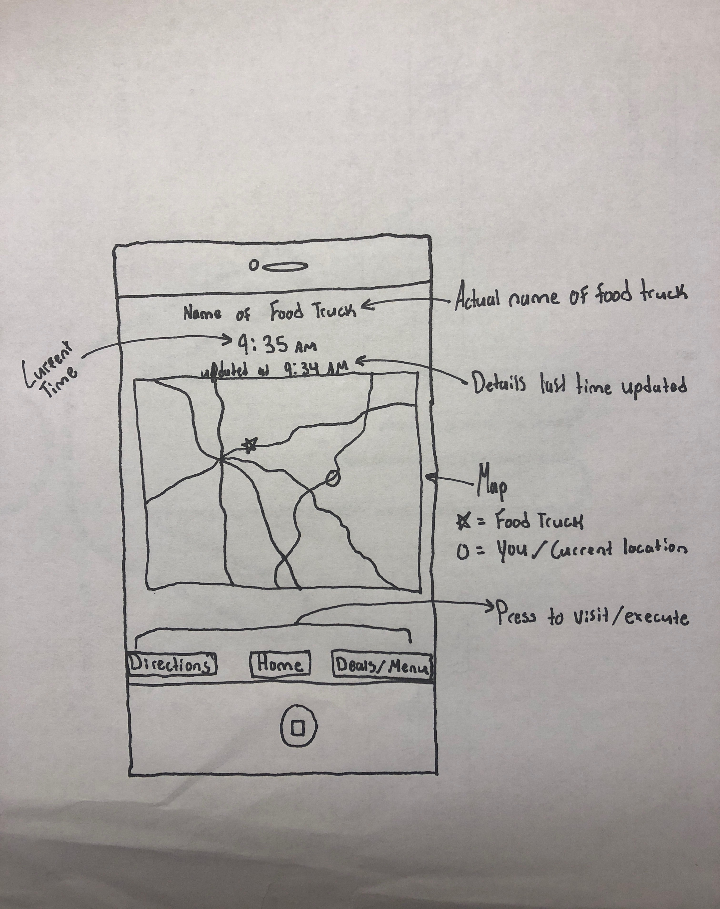

Solution
a solution for food truck customer engagement.
The Need for a Solution
After completing research it became clear that location was crucial to food truck success and likewise so was the ability to change locations. In order for a food truck to reach its highest potential it has to be able to move from location to location, constantly looking for the areas with highest amounts of foot traffic. This presented an issue. As food trucks move around, previous customers are left in the dark about the location of their favorite food truck. The necessary but variable location of food trucks presents an opportunity to develop a mobile application to update customers on location. To incentivize customers to track down their favorite food trucks the application will also alert customers to deals and events the food truck may be having.
Source:
The Solution
What is it?
In order to tackle the challenges of food truck location and customer engagement we propose a mobile application with the option for integrated social media interaction. The app will be available for free download on all IOS and Android devices.
How does it work?
The application works by linking the consumer to the food truck through the use of social media feeds. The customer will download the application and a map will pop up displaying both the location of the customer and the nearest food truck alike. When the location of the food truck changes, the customer will receive a notification alerting them to the change. The map will also have the functional ability to provide directions to the food truck and the ability to alert you when the food truck is within a certain radius from your location. To further engage customers the app will display a barcode that will be scanned when ordering. The application will log each purchase, awarding customers "points" each time until reaching a certain threshold upon which they will receive some prize (ex. free meal).
In addition to the logistic capabilities provided through the app, we propose a social media strategy which involves in-app incentives for users such as points in return for using the food truck hashtag or posting a photo of the truck at its current location. Incentivizing sharing on social media platforms will allow customers to interact with the food truck brand and draw in new customers through free marketing. The three embeded social media sites should be twitter, facebook, and instagram. If six people share a photo and each of those people have a mere 200 followers, more than a thousand people could be reached through the posts. By integrating social media platform sharing in the app, users can post directly from the app and see the foodtruck feeds as well.
Will this work?
Our proposed mobile application addresses the issue of location and customer engagement. The application adresses the issue of location by providing a "live" map that will showcase food truck location relative to customer location, even alerting customers when their usual food truck is in town. This proposed technology will make it so that customers have no question of where the food truck is currently located. In order to tackle the issue of engagement and make sure customers return, we will implement a rewards system that utilizes a unique barcode displayed in each customers application. The rewards system will incentivize repeat customers and instill a brand image of tech saviness and generosity.
Because the food truck owner is not technology savy, we propose the task of creating the app be contracted so that it wouldn't interfere with day to day tasks of the three employees. Preferably, one of the employees could be in charge of posting to social media a certain number of times per day to keep customers in the loop and content fresh.
Target Market
The market that this solution targets is anyone with a liking towards food trucks and an access to technology. Most consumers and users of the technology will live in urban to sub-urban areas and have a knowledge of and open access to technology.
Consumer Reaction
The reaction from consumers towards this technology should be positive. Costumers have long struggled with determining the location of their favorite food trucks. Our mobile platform mitigates this issue by allowing customers the ability to get up to minute accounts of where their selected food truck is. By providing customers with updating knowledge of where food trucks are located along with incentives for doing business, the consumers base as a whole should be delighted with the release of such a technology.
What Will it Look Like?
